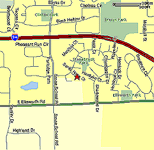

|
Directions to Bryant! |
|
|  | Bryant Elementary - 2150 Santa Rosa Dr. Take State St. to Packard. Turn south (left) on Packard. Take Packard for a few miles, pass Stadium. Turn right on Stone School Rd. Go past Eisenhower and the I-94 pass. Turn left on Champagne. Turn right on Santa Rosa. for more info, contact Nidhi Singhal |